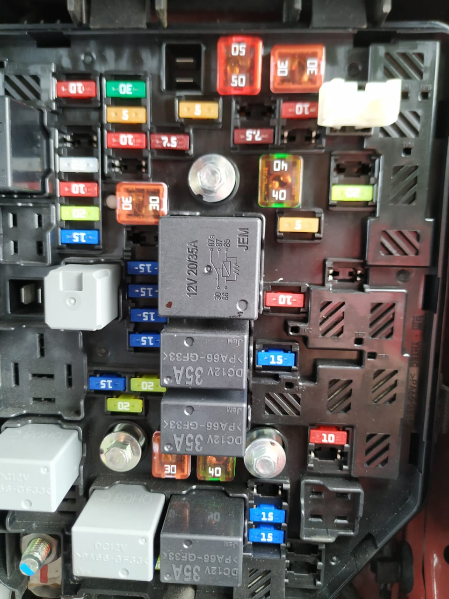

La caja de fusibles esta ubicada en la esquina superior derecha es un conjunto de piezas que forman parte del sistema de seguridad eléctrico del vehículo. La caja de fusibles es como lo indica su nombre una caja, dentro de sí contiene una cantidad determinada de fusibles dependiendo de la configuración eléctrica del vehículo. El fusible funciona como protector del circuito, cuando ocurre una sobretensión de la corriente, el alambre que se encuentra al interior de este se quema y corta la conexión con el circuito.
Esta caja se encarga de completar los circuitos es decir estan conectados directamente a los circuitos electricos por medio de los fusibles haciendo la funcion de otro componente que transmite la corriente, por lo que si un fusible no esta en su lugar o esta totalmente estropeado cualquiera de los circuitos que se conecten a ese fusible o relevador se desconectan y no funcionan esto para proporcionar proteccion a las partes que pueden llegar a ser excesivamente costosas y por un pequeño cortocircuito puede dejar de funcionar. La caja de fusibles se debe comparar con su tapa, en esta se indica lo que realiza cada fusible por lo que periódicamente se necesita revisar esta caja, y si en alguna ocasión el vehículo no enciende hay probabilidad de que algún fusible se haya quemado por lo que si esto pasa es necesario acudir con un experto.
